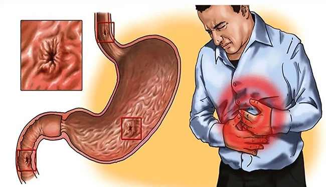
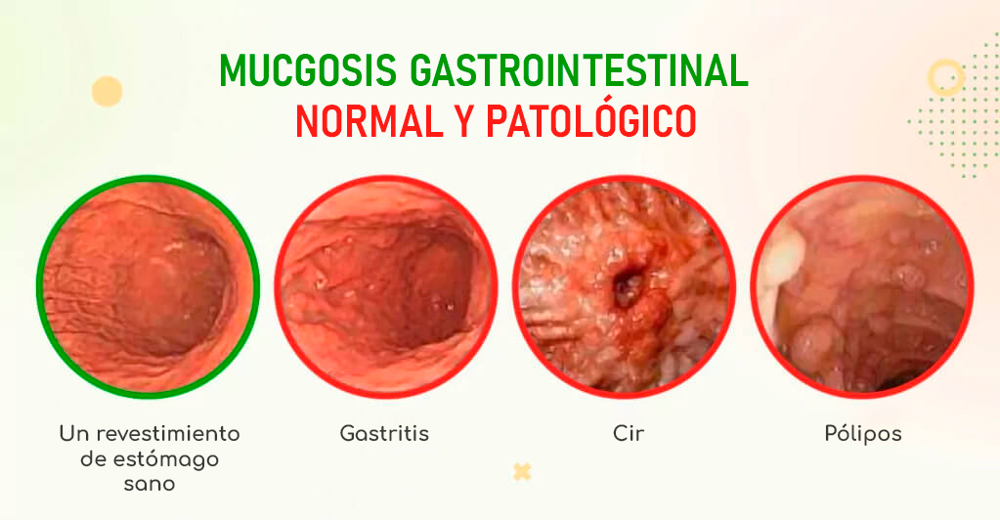
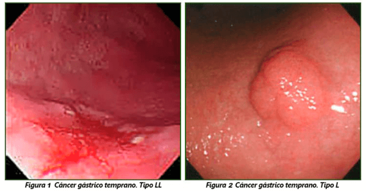
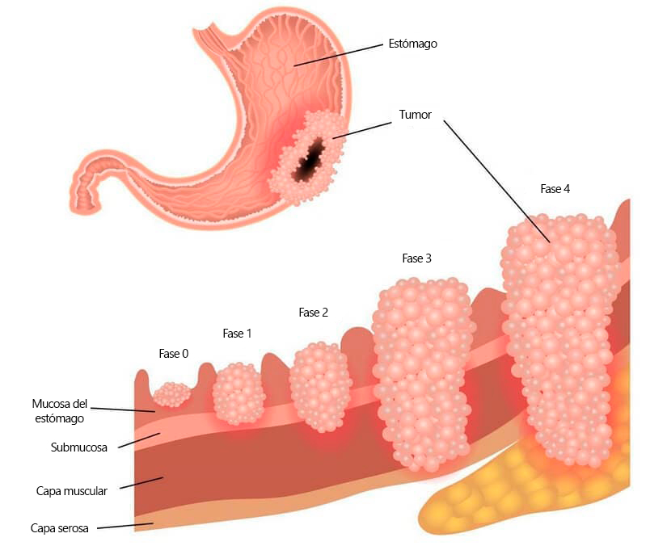
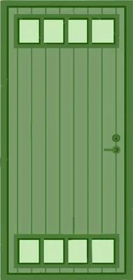
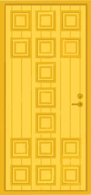

التهاب المعدة الناجم عن الطفيليات يؤدي في البداية إلى ظهور قرحة، ثم السرطان والوفاة المبكرة!
وأوضح طبيب الجهاز الهضمي في كوستاريكا ما سيحدث إذا لم يتم اكتشاف التهاب المعدة والبدء في مرحلة مبكرة، كما طمأن المواطنين بالحديث عن وجود منتج حديث وفعال وبأسعار معقولة يقضي على جميع مشاكل الجهاز الهضمي بشكل نهائي لا يوجد به مواد كيميائية و لن تكون في حاجة للعمليات الجراحية.
مارتا كابريرو
اليوم معنا مقابلة بين الطبيب ميغيل سواريز - أكاديمي، دكتوراه في العلوم الطبية، أستاذ، دكتور يتمتع بسنوات عديدة من الخبرة.
ننشر لكم تفاصيل المقابلة .
- دكتور سواريز، هل صحيح أن التهاب المعدة يؤدي إلى الإصابة بسرطان المعدة والأمعاء وأعضاء أخرى في الجهاز الهضمي؟
- صحيح الناس تبدأ مشاكلها بنفسها! إنهم يعانون ويستخدمون المواد الكيميائية الشعبية عديمة الفائدة ويؤدي ذلك إلى عواقب وخيمة.
لرؤية الصورة كاملة، دعونا أولا نفهم ما هو التهاب المعدة.
التهاب المعدة هو التهاب بطانة المعدة. ويرتبط عادة بخلل في التوازن الحمضي القاعدي في المعدة ويمكن أن يحدث بسبب مجموعة متنوعة من العوامل مثل الالتهابات أو استهلاك الكحول أو الإجهاد أو سوء التغذية أو المواد الكيميائية .
إن الاكتشاف المتأخر لالتهاب المعدة أو تقديم رعاية غير صحيحة يؤدي دائمًا أولاً إلى تكوين القرحة، ثم إلى الأورام الحميدة، وهي علامة بنسبة 100٪ على الإصابة بالسرطان. لا أريد إخافة أحد، لكن هذا طريق مباشر إلى القبر!
سأبدأ بالترتيب. يعاني كل واحد منا تقريبًا من آلام في المعدة مرة واحدة على الأقل في حياته. يمكن أن تكون تشنجات مفاجئة أو هجمات مستمرة أثناء وبعد تناول الطعام. إذا كانت هذه الآلام تزعجك بانتظام وكانت مصحوبة بثقل في المعدة أو غثيان أو قيء أو تجشؤ، فأنت مصاب بالتهاب المعدة.
في بعض الأحيان يمكن أن يكون التهاب المعدة شديدًا لدرجة أن تلف الغشاء المخاطي يحدث على مدى فترة طويلة من الزمن أو يتكرر بشكل متكرر، ومن ثم قد تتشكل تقرحات تسمى القرحة على جدران المعدة.
يمكن أن تكون القرحة خطيرة لأنها يمكن أن تسبب الألم والنزيف والقيء الدموي ومشاكل أخرى في الجهاز الهضمي.
عندما تُترك قرحة المعدة دون حل او تخلص منها أو تتكرر القرحة، يمكن أن يؤدي الالتهاب المستمر وتلف الأنسجة إلى ظهور خلايا غير طبيعية أو متحولة في جدار المعدة. تصبح هذه الخلايا غير طبيعية في البنية والوظيفة وتتوقف عن أداء مهامها الطبيعية.
بناءً على ديناميكيات عامي 2022 و2023، نلاحظ انخفاضًا حادًا في هذه الفترة لمدة 1-2 سنوات من التهاب المعدة المزمن (مع هجمات أكثر من مرتين في الشهر) إلى انحطاط الأنسجة إلى ورم خبيث.
- هل من الممكن الوقاية من هذه المشكلة في مراحلها المبكرة؟
- يستطيع. ولكن اسمحوا لي أن أشرح هذا للناس! إنهم يستخدمون العديد من المواد الكيميائية ويأخذون الحقن الشرجية ضد الإمساك، ويتناولون نفس المواد للتخلص من التهاب المعدة كما كانوا يفعلون قبل 20 عامًا، وما زال الناس يستخدمونها.
ولا أحد! أكرر! لا أحد يقول صراحة انه يعاني من التهاب المعدة:
- مع كل وجبة، تواجه عواقب ارتداد محتويات المعدة إلى المريء ثم إلى تجويف الفم، والذي يصاحبه تجشؤ الهواء أو الطعام غير المهضوم.
- لسنوات طويلة وهو مشبع من الداخل برائحة كريهة تنبعث من الفم.
- في غضون 1-2 سنوات فقط، هناك خطر الإصابة بالسرطان.
لكن المواد الكيميائية لا تساعدك على التخلص من السبب، بل تعمل فقط على تخفيف الأعراض، مما يعقد التشخيص ويساهم فقط في تفاقم العملية المتقدمة لالتهاب المعدة.
في الوقت نفسه، يمكنهم تقليل الحموضة بسرعة، مما يجعل عملية الهضم الطبيعي للطعام صعبة ويمكن أن يؤدي إلى مشاكل أخرى في الجهاز الهضمي: الإمساك، البواسير، هبوط المستقيم، تمزق جدران المعدة أو الاثني عشر، إلخ. تكون حلقة مفرغة: تساعد المواد الكيميائية في التخلص من التهاب المعدة مؤقتاً ، ولكنه يسبب ضررًا للجهاز الهضمي بأكمله
إذا تجاهلت جميع الشروط المذكورة أعلاه لفترة طويلة، فسوف تنشأ مضاعفات تهدد الحياة المشاكل الصحية المصاحبة لها. من تورم الأعضاء الداخلية وتضخم الأوردة المستقيمية إلى مشاكل صحية تدريجية للجهاز العصبي المركزي والسمنة والسكري.
والنتيجة في أفضل الأحوال هي الإعاقة وتدهور خطير في نوعية الحياة. وفي أسوأ الأحوال الموت :
- تسمم الدم
- انسداد معوي
- القرحة الهضمية
- تمزق معوي
- نزيف داخلي
- فقر دم
- عدوى الإعصار
- التهاب الصفاق
- الأورام الخبيثة
لا أحد يعتقد أنه مع ظهور الأعراض الأولى لالتهاب المعدة، تتشكل الاضطرابات بالفعل في الجسم، وأنه خلال 1-2 سنوات، وربما حتى أشهر، سيتم الشعور بالتدهور المفاجئ لحالة الشخص.
معظم أعراض سرطان المعدة واضحة تمامًا ويصعب تفويتها. غالبًا ما يتطور لدى الأشخاص الذين يعانون من هذه المشكلة في المراحل المبكرة:
- إمساك
- تشكيل الغاز الشديد وانتفاخ البطن
- خردل
- حمض ارتجاع
- مشاكل في البلع
- القيء والغثيان
- الإسهال والأعراض المتكررة لاضطراب المعدة
ومن الأعراض الأخرى التي قد تصيب الشخص هي فقدان الشهية، رائحة الفم الكريهة، آلام في الجزء العلوي من المعدة، حرقة المعدة المستمرة خاصة في الليل وفي الصباح، القيء من محتويات المعدة الدموية، التجشؤ بطعم حامض أو مرير، طعم سيء في الفم والمرارة. بالإضافة إلى ذلك، قد يشعرون أيضًا بالتعب، كما لو أنهم لا يملكون الطاقة. يعاني العديد من الأشخاص من ارتفاع في درجة حرارة الجسم دون سبب.
في مشاكل الجهاز الهضمي، يمكن أن تؤدي معظم المشاكل الصحية إلى الوفاة، لذا فإن الخوف من السرطان فقط هو أمر غير مقبول. انظر إلى صور أعضاء الأشخاص الذين بدأوا برائحة الفم الكريهة والإمساك والحرقة، أي التهاب المعدة الأولي، وانتهوا بالوفاة.
منظار المعدة لزوجين مصابين بالتهاب المعدة. تطورت الأورام على مدى 8 أشهر وأدت إلى الوفاة الفورية.
يتشكل سرطان المعدة دون أن يلاحظه أحد خلال سنة أو سنتين ويمكن أن ينتشر إلى الأعضاء المجاورة.
كل هؤلاء لم يتخلصوا من مشكلة الطفيليات إطلاقاً، أو لم يستخدموا المواد الكيميائية العادية .
وفقا لتقديرات خبراء منظمة الصحة العالمية، في منتصف القرن الحادي والعشرين، ستحتل مشاكل الأورام في الجهاز الهضمي واحدة من الأماكن الرئيسية للوفيات في بلدنا.
ويرجع ذلك بشكل رئيسي إلى:
- أسلوب حياة الإنسان المعاصر في الجزائر (الإجهاد، سوء التغذية، الخمول البدني، العادات السيئة)
- التلوث البيئي
- زيادة حصة المنتجات الغذائية منخفضة الجودة والمعدلة وراثيا في النظام الغذائي
- نظام المعاملة الجنائية الذي عفا عليه الزمن وعفا عليه الزمن.
- وهذا يثير السؤال: "لماذا لا يستطيع العلماء تطوير طريقة فعالة جديدة أو استخدام النظام الغربي للقضاء على التهاب المعدة تحسين الجهاز الهضمي؟"
-- شكرًا لك على هذا السؤال الدقيق وسأكون سعيدًا بالإجابة عليك: لقد طور العلماء منذ فترة طويلة مكملاً غذائياً طبيعيًا يعمل على تطبيع الجهاز الهضمي البشري بأكمله في غضون شهر. بالإضافة إلى ذلك، فهو يزيل التهاب المعدة تمامًا، ويعيد عمل الجهاز الهضمي بأكمله إلى طبيعته، وهو أفضل وسيلة للوقاية من السرطان
يستخدم هذا المكمل الغذائي في الجزائر الأن . هناك، تمكنوا من خفض معدل الإصابة بمشاكل الجهاز الهضمي بين السكان إلى 20-40٪ خلال عام واحد بعد استخدامهم هذا المنتج الذي يساعد على تحسين الميكروبيوم في الجهاز الهضمي البشري.
إن انتشار مشاكل الجهاز الهضمي في بلدنا أمر مخيف: فهو يتراوح في مناطق مختلفة من 70 إلى 90٪ من السكان. وهذا أعلى بكثير مما هو عليه في أوروبا واليابان والولايات المتحدة.
لكننا لسنا متخلفين؛ لدينا أيضًا منتج يتفوق حتى على نظائره الأجنبية من حيث النتائج.
في العام الماضي، اجتاز المنتج الجديد " Parasit Detox"، الذي طوره علماء في الجزائر ، والذي يخلق التوازن الأمثل للميكروبيوم في الجهاز الهضمي بأكمله، جميع الدراسات السريرية وإصدار الشهادات.

يعمل هذا المكمل الغذائي الجديد على تحييد تأثير العوامل الضارة في الأمعاء يحسن الميكروبيوم الطبيعي للجهاز الهضمي بنسبة 100% خلال 30 يومًا، مما يقضي على جميع الأعراض.
هذا مركب عشبي ذو مرحلتين، عند تناوله، يؤدي إلى تخليق 4 مليارات وحدة تشكيل مستعمرة (CFU/G)، مما يسمح له بالحفاظ على توازن ميكروبيوم المعدة وله تأثير فريد على الجسم.
إذا قمت بإستخدام هذا المكمل الغذائي , فهي تحتوي على مواد تساعد على تخفيف الالتهاب في المعدة والأمعاء و القضاء على البكتيريا. وبفضل هذا تختفي آلام المعدة والأمعاء والانزعاج وانتفاخ البطن وانتفاخ البطن والإمساك والإسهال وحرقة المعدة والتجشؤ وغيرها من مظاهر التهاب المعدة واضطرابات الجهاز الهضمي.
إذا قمت بإستخدام هذا المكمل الغذائي , فإن Parasit Detox يحتوي على مواد طبيعية 100% تعمل على تطهير الجسم من الطفيليات وبيضها، والقضاء على آثار التسمم، وترميم الأنسجة التالفة والأغشية المخاطية، وتنظيف السموم والفضلات بلطف.
فوائد المكمل الغذائي Parasit Detox
- يخفف من التهاب المعدة.
- يقوي جهاز المناعة.
- يساعد الجسم بعد التسمم.
- التخلص من الطفيليات.
- يحسن عملية التمثيل الغذائي.
- يساعدك على فقدان الوزن بسرعة وأمان.
في الوقت الحالي، هذا هو المنتج الوحيد الذي نستطيع ان ننصح به الناس ، فهو أفضل بكثير من العديد من المنتجات الكيميائية الضارة .
هذا منتج فريد من نوعه ابتكره أفضل علمائنا مع الأخذ في الاعتبار انه منتج طبيعي 100% .
هذا مكمل غذائي طبيعي 100% قوي يجمع بين التقنيات الطبية الحديثة والقوة الطبيعية للمستخلصات من مجموعة واسعة من النباتات.
توفر المكمل الغذائي تحسين عمل الجهاز الهضمي البشري، المطبقة في Parasit Detox، تأثيرًا سريعًا وقويًا ضد التهاب المعدة وجميع مشاكل الجهاز الهضمي والجهاز الهضمي.
يختلف المنتج عن جميع نظائره الموجودة في الترميم الكامل للغشاء المخاطي للمعدة، والقضاء على التهاب المعدة في جميع المراحل، حتى في الحالات المتقدمة، والتطهير اللطيف للأمعاء، وترميم الجهاز الهضمي، وزيادة وصيانة مناعة الهاتف الخلوي على مستوى عالٍ. .
تم إجراء دراسة لهذا المنتج ، حيث كانت المشكلة الرئيسية للمشاركين هي التهاب المعدة وقرحة المعدة.
تناولت إحدى المجموعات منتجاً كيميائيا شائعًا .. استخدمت مجموعة أخرى Parasit Detox. وأذهلت النتائج العلماء. الغالبية العظمى ممن تعافوا كانوا من مجموعة Parasit Detox، ولست متفاجئًا على الإطلاق من هذه النتائج.
يتمتع الجزائريين اليوم بإمكانية الوصول إلى هذا المنتج الاحترافي لنهج متكامل لتصحيح اضطرابات الجهاز الهضمي، والذي ابتكره كبار العلماء الجهاز الهضمي في الجزائر مع مراعاة الخصائص الغذائية والميكروبيوم لسكان الجزائر .
يحتوي على مستخلصات نباتية 100% مختارة ومدروسة جيدًا، ويضمن عامل شكل قرص سهولة هضمها على الفور.
يساعد Parasit Detox في التخلص من أي شكل من أشكال التهاب المعدة والقرحة الهضمية ومتلازمة القولون العصبي، وهو مناسب للإمساك الناجم عن تناول المواد الكيميائية ومشاكل المرارة، ويحسن عملية الهضم ويحسن أداء الجهاز الهضمي ككل.
كل هذا معًا يساهم في تطبيع العمليات الميكروبيولوجية في الجهاز الهضمي وتحسين النشاط الحيوي في مختلف المؤشرات. كما يقولون، من أجل طول العمر النشط غدًا، يجب عليك دعم الميكروبيوم الخاص بك اليوم.
تركيبة المنتج طبيعية تمامًا وآمنة تمامًا، وهو أمر مهم للأشخاص الذين لديهم بالفعل قائمة كاملة من المشاكل الصحية المزمنة. لا يسبب Parasit Detox أي آثار جانبية ويمكن تناوله في المنزل بسهولة .
تعتمد التركيبة على باقة من المستخلصات النباتية التي تحتوي على نسبة عالية من مضادات الأكسدة والفيتامينات والعناصر الدقيقة المفيدة. إنهم يشكلون معًا حماية موثوقة ضد الفيروسات والالتهابات، ويعيدون عمليات التمثيل الغذائي إلى طبيعتها ويؤسسون أنظمة تالفة للتعافي.
بالإضافة إلى ذلك فإن Parasit Detox مفيد لأنه لا يضر الجسم. علاوة على ذلك، فإنه يقويه. لكن الأهم من ذلك أن المنتج له تأثير إيجابي على جميع الأجهزة والأعضاء.
يؤدي تناول المكمل الغذائي Parasit Detox إلى تفاعل متسلسل للتغيرات الإيجابية في الجسم. فبعد التعامل مع مشكلة خطيرة، يتخلص الجسم من مشكلة أخرى وثالثة وما إلى ذلك. يمكنك أن تسمي هذا "تأثير الدومينو". البدء بعملية تنظيف القولون، وهذه هي الخطوة الأولى. وبعد ذلك ستبدأ الأشياء المذهلة بالحدوث!
1. إخراج السموم والفضلات من الجسم
يساعد تناول Parasit Detox على تنظيف خلايا الجسم من المواد السامة. يتم تحسين وظائف الكلى الصحيحة واستقلاب السوائل في الجسم. تتوقف الكلى عن الاحتفاظ بالمياه ولا داعي لتناول مدرات البول.
- التخلص من الألم والتورم في الأرجل .
- التخلص من مشاكل المعدة .
- يخرج الهواء من الرئتين بسهولة ويصبح التنفس أسهل.
2. تثبيت الضغط
مع الأداء الطبيعي للمعدة والأمعاء، يبدأ الدم في تنظيفه بسرعة من السموم ومنتجات الاضمحلال. كما يتم تنظيف الأوعية الدموية من لويحات الكوليسترول، مما يعني خلو الشخص تماماً من ارتفاع ضغط الدم.
بعد انتهاء فترة الإستخدام يتم تحسين شبكة الأوعية الدموية في الجسم بالكامل. تصبح الأوعية مرنة وثابتة، وتعود إلى الحياة وتقلبات "عازلة" بسلاسة في ضغط الدم. سوف تعوض الأوعية التي تمت ترقيتها أي اختلافات وتحافظ على ضغط مستقر يتراوح من 120 إلى 80.
3. تحسين وظائف المخ
بعد إستخدام المكمل الغذائي Parasit Detox تتحسن الدورة الدموية الدماغية بنسبة 73%.
يلاحظ الأشخاص بكل سرور أن لديهم:
- تتحسن الذاكرة
- يعود النوم إلى طبيعته ويختفي الخمول والضعف
- يوقف طنين الأذن.
- الصداع يتوقف.
4. تحسين حدة البصر، و تقوية القرنية
لا يقوم Parasit Detox بتنظيف الأوعية الدموية والشرايين الكبيرة فحسب، بل يقوم أيضًا بتنظيف أصغر الشعيرات الدموية. هناك الكثير منهم بشكل خاص في العيون. وهذا يؤدي إلى تجديد خلايا الشبكية وتحسين قوة عضلات العين.
- تتحسن حدة البصر.
- يتم تطبيع ضغط العين .
- يتم تقليل أعراض إعتام عدسة العين.
5. تطبيع إنتاج الهرمونات
قد يكون انتهاك الأداء المتوازن للميكروبات المعوية عاملاً مسببًا لعدم التوازن الهرموني وتطور العديد من مشاكل الغدد الصماء. لذلك، من الضروري أن يعمل العضو بشكل كامل.
بعد تناول Parasit Detox تعمل أيضًا على تطبيع إنتاج الهرمونات، مما يعني:
- يبدأ الجسم بالتحكم بشكل مستقل في تحسين مستوى الجلوكوز.
- يتم تنظيم نشاط الانزيمات
- التمثيل الغذائي للدهون متوازن.
يعلم الجميع أن المناعة تتشكل في الأمعاء. استعادة عمل الجهاز الهضمي يؤدي إلى تعزيز دفاعات الجسم.
يمكننا القول أنه بعد دورة Parasit Detox ، يبدأ الشخص فعليًا في عيش حياة مختلفة! و للعلم لا يمكن تحسين وظائف الجهاز الهضمي الطبيعية بسهولة و لكن مع هذا المنتج يمكنكم التخلص من هذه المشاكل بسهولة .
يحمي الإنسان نفسه من الحوادث المختلفة، على سبيل المثال، من الالتهابات الفيروسية والسمنة وتطور السرطان.
باختصار، نوعية الحياة تتحسن بشكل ملحوظ. والأهم هو مدتها!
- نعلم أن Parasit Detox غير متوفر في الأسواق . فكيف يمكننا الحصول عليه ؟
يأتي الأشخاص إلي بشكاوى مختلفة، لكن الاختبارات تظهر في النهاية نفس الشيء: التهاب المعدة، وقرحة المعدة، ومشاكل معوية. دورة Parasit Detox: يتخلصون أيضًا مما كان يزعجهم منذ سنوات!
رافائيل:
"لقد عانيت من آلام رهيبة في المعدة لفترة طويلة. قام المختصين بتشخيص التهاب المعدة منذ بضع سنوات وظلوا ينقلونني في سيارة إسعاف. وبعد ذلك بدأت مشكلة السكري وارتفاع ضغط الدم في التطور ... كنت محظوظًا لأنهم نصحوني بالمكمل الغذائي " Parasit Detox Parasit Detox هذا المنتج لم يساعدني ذلك فقط في التخلص من مشكلة التهاب المعدة التي كانت تزعجني فحسب، بل أيضًا أعاد جسدي بالكامل. وعدت إلى حياتي الكاملة وعملي المفضل."
آنا توروجا:
""كنت أعاني من ضعف و مشاكل في المعدة منذ أن كنت صغيراً. كما أن ارتفاع نسبة الحصوات الصفراوية والسكر والكوليسترول في الدم مرتفع. وكثيراً ما أصاب بمشاكل صحية . ويقولون أيضاً إن ذلك بسبب التهاب المعدة! ولم تكن هناك طريقة لإدارة كل شيء في وقت واحد. في نفس الوقت: أتناول هذا المنتج لشيء والآخر يتفاقم... عانيت لسنوات حتى نصحني المختصين بالمكمل الغذائي Parasit Detox بدورة واحدة من المنتج، وأنا شخص سليم الأن و لا اعاني من مشاكل صحية كما عانيت من قبل !"
"
لكن لا تعتقد أن Parasit Detox متاح للنجوم فقط. الأشخاص الذين كانوا محظوظين بما يكفي لتلقي هذا المنتج و حسنوا عمل الجهاز الهضمي، و تخلصوا من عدد من المشاكل المزمنة وحتى إنقاذ حياتهم، يسعدهم مشاركة انطباعاتهم في الرسائل.
هنا، على سبيل المثال، رسالة من مارينا التي كانت تعاني من مشاكل بالمعدة و إلتهاب المعدة :

مارينا 53 عامًا
الدكتور الفاضل . سواريز، شكرا جزيلا لك! لقد أنقذ Parasit Detox حياتي!
هذه ليست مبالغة. لقد كنت مصابًا بالتهاب المعدة المتقدم . أوه حقًا! بدأ وزني يزداد بسرعة وكان الألم فظيعًا. قضيت معظم وقتي في المستشفيات أو مستلقيًا على السرير. ...
كنت أموت حرفيا. لم يعد المختصين يعرفون كيفية وقف تطور المشكلة الصحية . كنت خائفة جدا من السرطان! لقد كنت على حافة ذلك! لقد وصفوا شيئًا بناءً على الأعراض، لكن لم يتم ملاحظة أي تغييرات جذرية.
لقد عشت في كابوس لعدة سنوات. وأي نوع من الحياة كان ذلك؟ هذا تعذيب وليس حياة! كل شيء كان يسير بهذه الطريقة. ثم اكتشفت عن المكمل الغذائي Parasit Detox !
لقد تناولت Parasit Detox للتخلص من مشاكل المعدة و التهاب المعدة كما نصحوني . شكرا لمن نصحني به! هذا هو المنقذ الحقيقي للحياة! بدأت بتناوله فور إستلامه وبدأت صحتي تتحسن تدريجياً: في البداية انخفض السكر والكوليسترول، ثم اختفى التورم، وعاد ضغط الدم إلى طبيعته.
اختفى الفائض تدريجياً، وأصبحت المعدة والأمعاء تعمل كالساعة! لقد مرت 6 أشهر منذ ذلك الحين ولم أستطع أن أكون أكثر سعادة! لا يوجد أي أثر لالتهاب المعدة. الأطباء يهزون أكتافهم فقط. من الصعب أن أصف مدى شعوري بالسعادة الآن. شكرا جزيلا على هذه الاداة المعجزة!
وكما ترون فإن هذا المكمل الغذائي الطبيعي والفعال يقود الإنسان إلى حياة طبيعية . علاوة على ذلك، فهو يقضي على سبب المشكلة وليس على الأعراض الفردية.
- وماذا يجب على الأشخاص العاديين الذين يحتاجون للتخلص من التهاب المعدة و تحسين عمل الجهاز الهضمي؟ أين يمكننا شراء Parasit Detox ؟
- الآن يتم توزيع Parasit Detox عبر الإنترنت فقط.. بالإضافة إلى ذلك، يتم شحنه و تسليمه مباشرة من مصنع الإنتاج حتى باب منزل المشتري ، وهو أفضل حماية ضد المنتجات المقلدة .
البرنامج الترويجي "صحة الجهاز الهضمي"
وكجزء من البرنامج، نقدم خصومات في الجزائر عند شراء هذا المكمل الغذائي (الهدية ستكون في نهاية المقال). يمكن لأي من قرائنا الحصول على خصم، ولكن فقط أولئك الذين يحتاجون المنتج حقًا يمكنهم الاستفادة من الخصم. وأفضل ما في الأمر هو أن الخصومات تصل إلى 65 %، مما يعني أن قرائنا المحظوظين سيتمكنون من الحصول على المنتج بنصف السعر خلال العرض الترويجي!
- إلى متى سيستمر البرنامج التفضيلي؟
يستمر العرض حتى يوم (ضمناً). يتم منح 30.000 دروة لكل مرحلة. ويكونون جاهزين تمامًا خلال 3-4 أسابيع. وذلك على الرغم من عدم وجود إعلانات في التلفزيون أو الراديو. ينقل الناس المعلومات لبعضهم البعض، ويقدمون المشورة للأصدقاء والعائلة. لقد كانت مفاجأة حتى بالنسبة لنا أن كلمة Parasit Detox انتشر بهذه السرعة.
- دكتور سواريز، شكرا على المقابلة! هل هناك أي شيء آخر تود أن تقوله لقرائنا؟
- نعم! أناشد جميع الأشخاص المصابين بالتهاب المعدة وكذلك جميع حالات عسر الهضم وأعراضه. إذا كنت محظوظًا وقمت بذلك قبل التاريخ المذكور، فإنني أنصحك بالمشاركة في مسابقة التخفيض Parasit Detox والطلب الآن مع خصم في أقرب وقت ممكن. اعتن بنفسك وكن بصحة جيدة!
وفقا للإحصاءات، فإن الأشخاص الذين يعانون من مشاكل الجهاز الهضمي يعيشون في المتوسط سنة الى خمس سنوات أقل من أولئك الذين تعمل المعدة والأمعاء بشكل طبيعي. يتيح لك Parasit Detox تحسين أداء الجهاز الهضمي بسرعة، والأهم من ذلك، تحسين والتخلص من العديد من المشاكل الصحية!
يستمر العرض حتى يوم (ضمناً).
شروط المشاركة في برنامج التخفيض :
-
ان تكون من سكان الجزائر وعمرك أكبر من 18 عامًا.
يتم توزيع المنتج بسعر مخفض فقط على مواطني الجزائر الذين بلغوا السن القانوني. - الشراء للاستخدام الشخصي فقط.
وهذا ضروري لمكافحة التجار . -
الشراء فقط من خلال المشاركة في المسابقة الرسمية بالأسفل .
ونظرًا لكمية المنتج المحدودة، يتم بيع المنتج من خلال المسابقة الرسمية المنشورة أدناه على الصفحة.
هام: تم التوصل إلى أن و هما أفضل وقت لبدء دورة Parasit Detox. يؤدي تثبيت متوسط درجة الحرارة إلى تسريع عملية التمثيل الغذائي وزيادة الدورة الدموية في الجسم وزيادة تدفق الدم والأكسجين إلى الأعضاء الداخلية وزيادة تأثير استخدام المنتج. يتم التخلص من التهاب المعدة وتطهير الجهاز الهضمي واستعادته بنسبة 75٪ أسرع مما يحدث في أوقات أخرى من العام.
شارك في المسابقة و خمن وراء أي باب سيكون التخفيض 65%
65%
25%
30%
كل ما عليك فعله هو إدخال اسمك ورقم هاتفك.
أسرع بالطلب
ينتهي التخفيض الخاص بك بعد :
10 : 00
13000 DZD
4999 DZD
عند شرائك دورة Parasit Detox
مبروك!
لقد ربحت تخفيض 65%
على سعر Parasit Detox
فاطمة
¡ Parasit Detox شيء عظيم ! لقد نجحت في شراء المنتج و إستخدمته لمدة 3 أشهر الآن أشعر وكأنني شخص مختلف ! لم يعد التهاب المعدة يزعجني، حتى الإمساك توقف، أذهب إلى الحمام كالساعة، كل صباح في نفس الوقت!

محمد
لقد سمعت عن Parasit Detox، لكني لم أجربه بعد. ولكن سيكون من الضروري. إنه أمر مخيف أن يؤدي مشاكل المعدة إلى السرطان، أو حتى الموت. توفي شقيق زوجتي بسرطان المعدة. ورغم أنه ذهب إلى العديد من المختصين إلا أنه مات. وبدأ كل شيء بالتهاب المعدة. لذا فكر في الأمر. طلبته لنفسي، لا بد لي من مساعدة معدتي.
عبد اللطيف
لقد كنت أتناول Parasit Detox لمدة شهر. النتيجة فاجأتني، بدأت أشعر بالتحسن، اختفى التهاب المعدة، وظهرت المقاومة وكان الضغط من 120 إلى 85. كما أعاني من ألم في الورك المشدود، خاصة بعد التمرين، وهكذا اختفى كل شيء.
ايمن
منتج جيد! أنا أحبه. لقد تناولته للإمساك ولتقوية الجسم، لكنني شاركته أيضًا مع زوجتي. نسبة السكر في دمك مرتفعة. لقد اختفى الإمساك، وأصبحت أمعائي تعمل كالساعة. انخفض سكر زوجتي . وكان ضغط الدم طبيعيًا أيضًا لعدة أيام. أوصي بالتخلص من السموم الآن للجميع.
كميلة
شكرا! تمكنت من طلب هذا المنتج وفقًا للبرنامج الترويجي. سأجربه الان للتخلص من مشاكل في المعدة...
سناء
"استخدمت مكمل Parasit Detox وكانت النتائج مدهشة! كنت أعاني من آثار سلبية نتيجة للطفيليات، ولكن بعد استخدام Parasit Detox، شعرت بتحسن كبير في صحتي وزادت طاقتي بشكل ملحوظ."
يوسف
"كنت مترددة في تجربة مكمل Parasit Detox في البداية، لكن بعد استخدامه، لم أكن أتمنى إلا أنني جربته من قبل! شعرت بتحسن واضح في الهضم وانخفاض في الأعراض التي كنت أعاني منها بسبب الطفيليات."
ياسمين
"كانت تجربتي مع مكمل Parasit Detox فعالة وملهمة حقًا! بعد معاناة طويلة مع مشاكل الهضم والطفيليات، قررت تجربة Parasit Detox ولم أكن أندم أبدًا على هذا القرار. شعرت بتحسن كبير في صحتي بشكل عام وانتعاش في حيويتي اليومية."
نادية
"استخدمت Parasit Detox لعدة أسابيع ولم أكن أتوقع النتائج الرائعة التي حصلت عليها! كان لدي مشاكل مع الهضم والطفيليات كانت تسبب لي الكثير من الإزعاج، لكن Parasit Detox ساعدني في التخلص منها بشكل فعّال وملحوظ."
انتصار
" Parasit Detox غير حياتي تمامًا! كنت أعاني من آثار سلبية للطفيليات على صحتي ونومي، لكن بعد استخدام Parasit Detox، شعرت بتحسن ملحوظ في جودة نومي وتقلصت الأعراض الغير مريحة بشكل ملحوظ."
نور
"استخدمت مكمل Parasit Detox بنصيحة من صديقة، ولم أكن أتوقع أن يكون لهذا التأثير الكبير على صحتي. كانت النتائج مذهلة حقًا، حيث شعرت بتحسن في الهضم وانخفاض في الأعراض الغير مريحة التي كنت أعاني منها بسبب الطفيليات."
فريدة
" Parasit Detox كان مكملًا غذائيًا معجزة بالنسبة لي! كنت أعاني من مشاكل في الجهاز الهضمي وكنت محبطًا جدًا، لكن بعد استخدام Parasit Detox، شعرت بتحسن كبير في الأعراض وانتعاش عام في حيويتي ونشاطي."
ماجدة
" Parasit Detox كان الحل الذي بحثت عنه طويلًا! كنت أعاني من مشاكل صحية مزعجة ولم أجد الطريقة المناسبة للتخلص من الطفيليات حتى جربت Parasit Detox، وكانت النتائج مذهلة حقًا. شعرت بتحسن في صحتي وزادت طاقتي بشكل ملحوظ."
نرمين
نعم القصص مخيفة ووحدة العناية المركزة أخرجت صديقي من العمل على الفور؛ فجأة مرض. وتبين أنها كانت الطفيليات! تخيل أنك تُؤكل حيًا، ولم تكن تعلم بذلك. إنه عائد للتو من العالم الآخر!
وسيم
لقد قمت أيضًا بتسميم الطفيليات Parasit Detox ! أشعر وكأنني ولدت من جديد! لو كنت أعلم من قبل أن سبب مشاكلي هو كل هذه الطفيليات! الآن طلبته لجميع أفراد الأسرة، ابني، ابنتي، بينما لديهم خصم جيد. وصلني اليوم.
وهام
شكرا على المعلومات المفيدة، مقالتك ساعدت كثيرا. كانت هناك مشاكل في الجهاز الهضمي، تناولنا Parasit Detox لمدة شهر، وتوقفت المعدة عن الألم، ولم يعد القلب يزعجك. هو منتج جيد.
منال
شكرا دكتور على النصيحة. لقد طلبت Parasit Detox ، فتخلصنا من الديدان لجميع أفراد الأسرة، لقد أخافنا بقصصه)))
ايمان
أوه، هذا المنتج المفضل لدي. بانتظام، مرتين في السنة، أكرر هذا المكمل . لقد سمعت عن هذا المنتج منذ وقت طويل. فهو طبيعي ولا يضر الجسم، ولكنه يقضي على جميع الطفيليات بشكل فوري.
فاطمة
الطفيليات لا تمزح. أنا أعرف ذلك بنفسي. إذا كانت هناك بعض الأعراض على الأقل، فلن يضر تطهير الجسم! أعتقد أنه يجب على الجميع إجراء الصيانة الوقائية بشكل دوري. وخاصة أولئك الذين يعملون في الأرض مثلي.
يسري
لقد إستخدمت المنتج ! إنها حقًا السماء والأرض من حيث الصحة. وما لم أحاول قبل ذلك. كان يعاني من الضغط وعدم انتظام ضربات القلب. وبمجرد أن قمت بإزالة الطفيليات، اختفت جميعها على الفور. أشعر وكأنني أضعت 20 عامًا.
عبد الله
على الرغم من أنني طبيب وأدرس هذه الأمور لمدة 6 سنوات، إلا أنني أجدها مثيرة للاشمئزاز للغاية. أي شخص رأى الطفيليات عند تشريح الجثة لن ينسى ذلك أبدًا. من الجيد أنهم وجدوا أخيرًا طريقة لمحاربتهم مرة واحدة وإلى الأبد. أوصي تمامًا Parasit Detox لجميع مرضاي
جميلة
لقد شاركت في السحب، وحصلت على خصم جيد جدًا، واشتريته بسعر منخفض جدًا. للاحتفال، قررت إكمال الدورة وتطهير جسدي. وصلت الحزمة في 3 أيام، أعجبتني الخدمة، المديرون لطيفون وودودون ويمكنك معرفة أنهم خبراء. يتم الدفع عند التسليم.